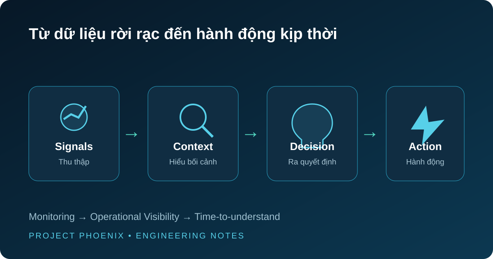

Xây dựng Enterprise NOC thực dụng: nhiều Dashboard chưa chắc đã nhìn thấy hệ thống
Có một lúc mình nghĩ Monitoring tốt nghĩa là phải thu thập được thật nhiều thứ. Sau này mình mới nhận ra: nhìn thấy nhiều chưa chắc đã hiểu được điều gì đang xảy ra.

Những ngày đầu xây một hệ thống Monitoring, mình khá thích cảm giác nhìn Dashboard đầy thông tin. CPU, RAM, Disk, Interface, Firewall, VM, Backup… thứ gì đo được thì gần như đều có thể đưa lên màn hình. Grafana càng nhiều panel trông càng có vẻ “đầy đủ”.
Nhưng rồi trong quá trình vận hành, mình bắt đầu tự hỏi một câu rất đơn giản:
Nếu ngay lúc này có incident, người đang nhìn Dashboard có biết chuyện gì đang xảy ra và nên làm gì tiếp theo không?
Nếu câu trả lời vẫn là “chưa chắc”, có lẽ chúng ta đang có rất nhiều metrics, nhưng chưa chắc đã có Operational Visibility.
Từ Monitoring đến câu hỏi thật sự của người vận hành
Monitoring thường bắt đầu bằng những điều mình đã biết trước: CPU cao, interface down, backup failed, service unavailable. Những Alert này cần thiết. Nhưng thực tế production hiếm khi hỏng theo đúng một trigger đẹp đẽ.
Một site chậm có thể liên quan đến network. Một application timeout có thể bắt đầu từ virtualization, storage hoặc một dependency khác. Một spike log chưa chắc là Security incident. Và một Dashboard đỏ chưa chắc đã là thứ cần con người hành động ngay.
Vì vậy, khi xây NOC, mình dần thay câu hỏi “còn metric nào chưa monitor?” bằng những câu gần với vận hành hơn: site nào đang bị ảnh hưởng, đây là lỗi đơn lẻ hay có correlation, chuyện bắt đầu từ khi nào, và tín hiệu nào đáng để kiểm tra trước?
Đó cũng là lúc Zabbix, Grafana hay Loki không còn là những sản phẩm đứng riêng. Zabbix giúp mình nhìn infrastructure health và trigger. Grafana giúp tổ chức operational view. Loki cho phép đi sâu vào log khi cần điều tra. Một vài API và automation nhỏ có thể nối những mảnh đó lại. Tool khác nhau, nhưng mục tiêu chỉ có một: giảm thời gian từ lúc biết “có chuyện” đến lúc hiểu “chuyện gì”.
Một Dashboard đẹp có thể vẫn là Dashboard không hữu ích
Có những panel nhìn rất đẹp nhưng sau vài tuần mình nhận ra gần như không ai dùng nó để đưa ra quyết định. Khi đó, giữ nó chỉ vì “đã làm rồi” không mang nhiều ý nghĩa.
Mình bắt đầu xem mỗi panel như một câu hỏi. Nếu không biết panel này đang giúp trả lời câu hỏi vận hành nào, mình cân nhắc bỏ hoặc thiết kế lại.
Thay đổi nhỏ đó làm mình nhìn Dashboard khác hẳn. NOC không phải một màn hình để trình diễn số liệu. Nó là giao diện giữa một hệ thống phức tạp và người đang phải quyết định trong lúc có áp lực.
Threshold không nên bắt đầu bằng một con số đẹp
Một bài học khác đến từ Alert. Đặt threshold thì rất dễ. CPU trên 80%, traffic trên một con số nào đó, log rate vượt một mức nào đó thì báo động. Nhưng hệ thống thực tế không vận hành giống nhau.
Có workload thường xuyên chạy cao nhưng hoàn toàn bình thường. Có traffic spike là hoạt động hợp lệ. Có log xuất hiện rất nhiều nhưng chỉ là status, retry hoặc noise.
Vì vậy mình thích quan sát baseline trước khi chốt threshold dài hạn: mức bình thường là gì, P95 ở đâu, peak xuất hiện khi nào, pattern thay đổi theo thời gian ra sao. Khi hiểu “bình thường” của hệ thống, mình mới có cơ sở tốt hơn để định nghĩa “bất thường”.
Điều này nghe có vẻ hiển nhiên, nhưng nó thay đổi chất lượng Alert rất nhiều.
Khi Alert quá nhiều, con người sẽ tự tạo một bộ lọc
Và bộ lọc đó đôi khi rất nguy hiểm: bỏ qua.
Nếu Teams hay email liên tục nhận những Alert không cần hành động, sau một thời gian engineer sẽ hình thành phản xạ xem chúng như background noise. Đến khi một Alert thật sự quan trọng xuất hiện, nó phải cạnh tranh sự chú ý với hàng chục tín hiệu vô nghĩa trước đó.
Mình xem Alert noise như một dạng operational debt. Tune severity, persistence, recovery message hay loại bỏ false positive không phải công việc “làm đẹp Monitoring”. Nó là một phần của Reliability.
Ai sẽ monitor chính hệ thống Monitoring?
Đây là câu hỏi mình thấy thú vị nhất.
Nếu toàn bộ khả năng quan sát tập trung vào một platform, điều gì xảy ra khi chính platform đó mất kết nối? Một màn hình im lặng có thể có hai nghĩa hoàn toàn khác nhau: mọi thứ đang ổn, hoặc người quan sát đã mất khả năng nhìn thấy chúng.
Vì vậy với những thành phần quan trọng, mình thích có một health path độc lập hoặc external watcher. Trong môi trường multi-site, một góc nhìn từ bên ngoài đôi khi giúp phân biệt rất nhanh lỗi của monitored system với lỗi của monitoring system.
Điều thay đổi trong cách mình nhìn NOC
Sau cùng, mình không còn nghĩ mục tiêu là xây “một Grafana thật đẹp” hay thu thập được thật nhiều metrics.
Mình quan tâm hơn đến một chỉ số khó nhìn thấy trên Dashboard: time-to-understand.
Khi incident xảy ra, team mất bao lâu để hiểu phạm vi, nhận ra tín hiệu quan trọng và biết bước tiếp theo nên là gì? Nếu NOC giúp rút ngắn khoảng thời gian đó, nó đang tạo ra giá trị.
Còn nếu chúng ta chỉ có thêm nhiều biểu đồ để nhìn, có lẽ hệ thống Monitoring đã lớn hơn — nhưng chưa chắc đã trưởng thành hơn.